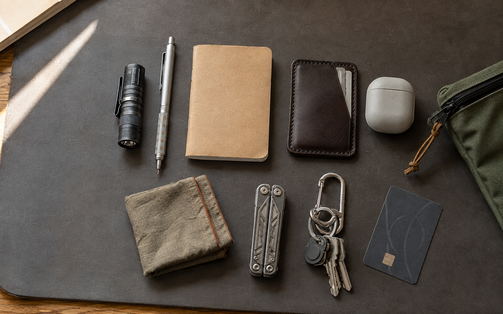

472G · 7 ITEMS민
민규출퇴근 Carry · 방금 전
LIVE지금 128명이 함께 있어요
물건의 가격보다 고른 이유를,
스펙보다 함께한 시간을 나눠요.
오늘 23명이
처음 주머니를 열었어요

472G · 7 ITEMS민규출퇴근 Carry · 방금 전
LIVE윤서가방·파우치 · 2분 전
준호 저는 바깥 칸을 20% 비워둬요. 수납지도 보여드릴게요.
품목이 달라지면 궁금한 것도, 보여주고 싶은 것도 달라져요.
각자의 방식으로 놀고 있는 방에 들어가 보세요.
옆으로 밀어 더 보기 →
출퇴근길에 실제로 꺼내는 것만 남겼어요. 검정 사이 한 점의 주황은, 어두운 가방 안에서 빨리 찾기 위한 제 방식입니다.
작년에 600g을 넘긴 뒤부터 매주 일요일에 한 번도 쓰지 않은 물건을 꺼냈습니다. 보조배터리와 큰 파우치가 빠지고, 작은 라이트와 종이 메모가 남았어요. 다음 달에는 이어폰 사용 횟수를 기록해보려 합니다.
작고 오래 쓰는 물건을 좋아합니다.
서울에서 만들고, 걷고, 기록해요.